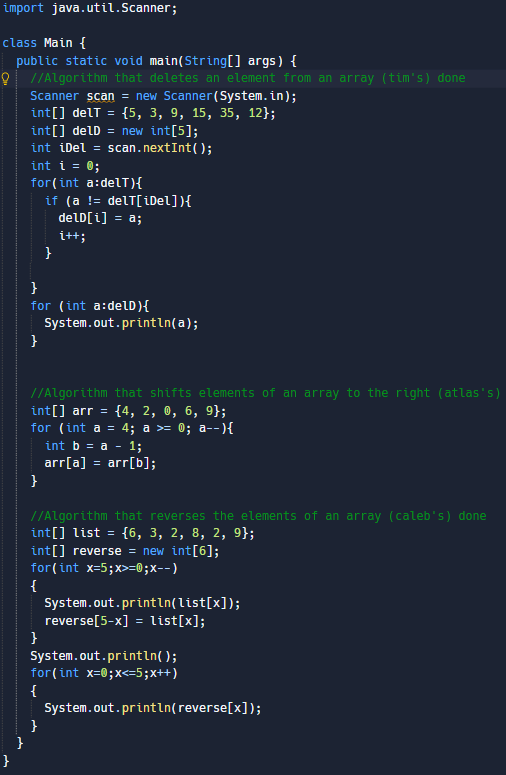

Description
Due to our vertical approach, students moving in to our high school program from our middle school program have had extensive coding exposure and practice. Students in this pathway will earn their Technology endorsement with a focus on computer science. During the course of their studies, students will become highly proficient in the use of HTML and Java.
Specialization - Computer Science, with a focus on different computer language including HTML and Java.
For those students looking to be challenged outside of the classroom, it is highly encouraged that students participate in CyberPatriot. This provides students with real-world application opportunities, as well as the potential to earn national recognition and scholarships.
Source www.neisd.net/page/21718
Courses
Fundamentals of Computer Science (H3032L)
This is intended as a first course for those students just beginning the study of computer science. Students will foster their creativity and innovation through opportunities to design, implement, and present solutions to real-world problems. Students will collaborate and use computer science concepts to access, analyze, and evaluate information needed to solve problems. Students will learn the problem-solving and reasoning skills that are the foundation of computer science.
Example of Coursework
Computer Science I Pre-AP (H3005L)
Course introduces students to programming with several web page languages including HTML, CSS, & JavaScript. Students are then introduced to beginning programming with Python and an introduction to Java.
Example of Coursework
AP Computer Science A (H3010L)
This is the last of the programming courses and is "equivalent to a first-semester, college-level course in computer science. The course emphasizes both object-oriented and imperative problem solving and design using Java language."(APCentral) This course teaches advanced programming and emphasizes object-oriented programming methodology with an emphasis on problem solving and algorithm development. This course prepares students to take the Advanced Placement (AP) exam that can be used for college credit.
Example of Coursework

Practicum in STEM
The Practicum experience is all about career exploration. The focus, and goal, is to spend intentional time exploring, developing skills, and reflecting. Students will be asked to explore through investigation and research; they will be asked to develop new skills and levels of professionalism; and they will be asked to reflect on their experience, their assumptions, their perspective, and their growth
Example of Coursework
none
Student Testimonies
Name
Benjamin Bowles
Grade
12
Why do you think the technology pathway is important?
More and more of our society is becoming oriented to technology, so in the future there will be a lot of jobs in the technology field.
Why do you think students should choose the technology pathway over others?
The technology pathway is the most fun and the teachers are the best.
Why do you like the technology pathway?
I have always been fascinated with computers and all things related to the technology pathway.
Name
Matthew Haruman
Grade
11
Why do you think the technology pathway is important?
Because computer programmers took it.
Why do you think students should choose the technology pathway over others?
If they want to program robots.
Why do you like the technology pathway?
Because I want to create video games
If you are a student and would like to add your testimony click here.
Teachers
Ms. Virena Sampayo, M.Ed
Degrees
- BA Interdisciplinary Studies EC-4
- MA Education with concentration in Instructional Technology
Certification
- Generalist EC-4
- Technology Education 6-12
- Technology Applications EC-12
About
I was born and raised in San Antonio, TX. I attended NEISD schools, Jackson-Keller Elementary, Nimitz Academy, and graduated from Robert E. Lee High School in 2003. I completed my Bachelor of Arts in Interdisciplinary Studies EC-4 from the University of the Incarnate Word in Dec. 2007. I taught in SAISD for 9 years in Prek, 2nd, and 3rd Grade. I completed my Master of Arts in Education with a Concentration in Instructional Technology from UTSA in 2018. I substituted for a year in NEISD and found my new home here at STEM Academy. This is my 5th year at STEM and I love teaching Computer Science.